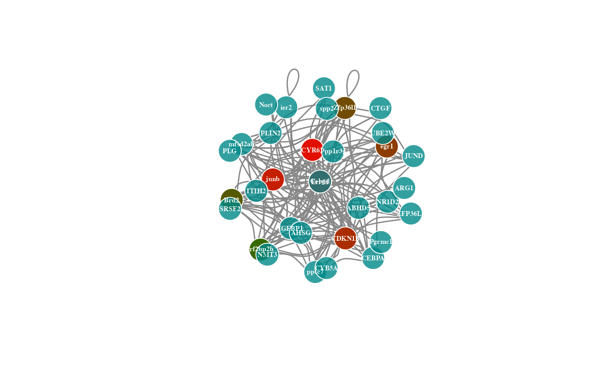
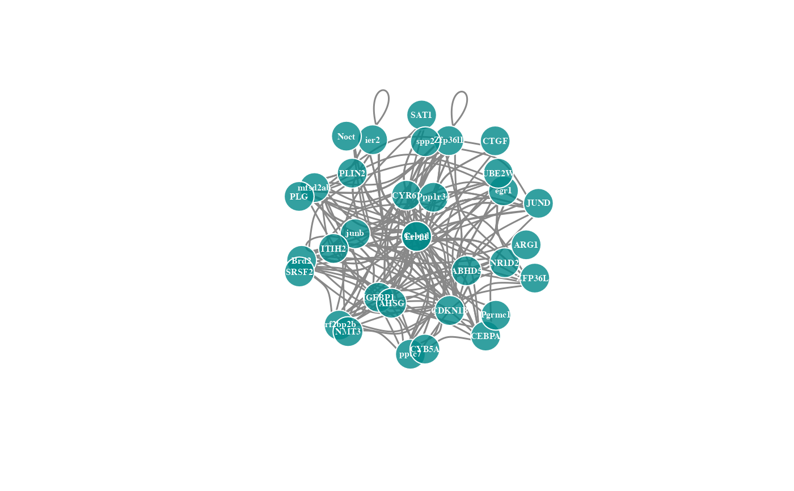
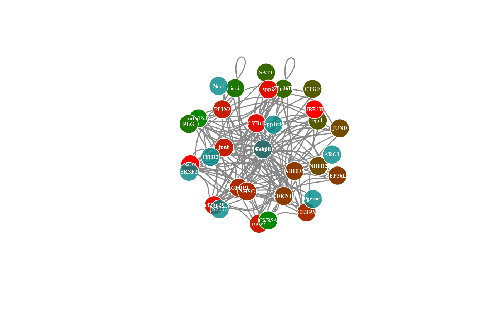
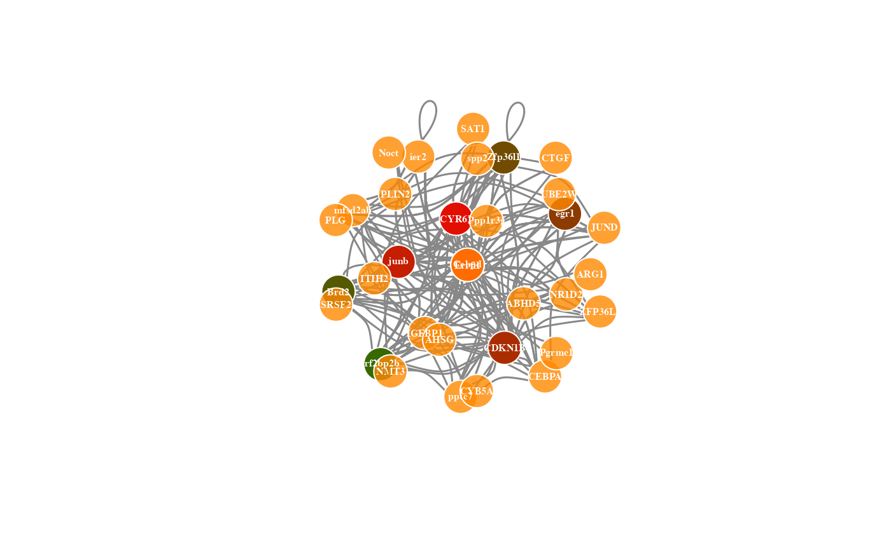
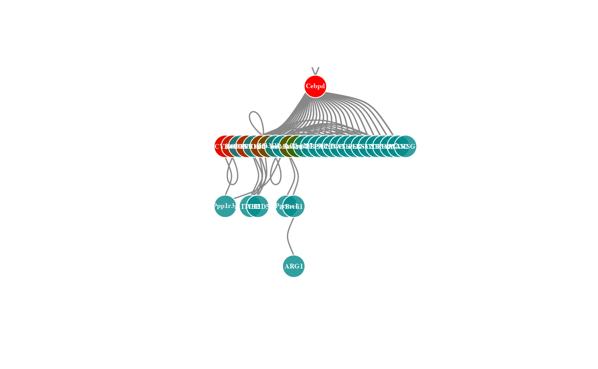

Network plot for analyzing and visualizing relationship of genes.
Source:R/network_plot.R
network_plot.RdNetwork plot for analyzing and visualizing relationship of genes.
Usage
network_plot(
data,
calc_by = "degree",
degree_value = 0.5,
normal_color = "#008888cc",
border_color = "#FFFFFF",
from_color = "#FF0000cc",
to_color = "#008800cc",
normal_shape = "circle",
spatial_shape = "circle",
node_size = 25,
lable_color = "#FFFFFF",
label_size = 0.5,
edge_color = "#888888",
edge_width = 1.5,
edge_curved = TRUE,
net_layout = "layout_on_sphere"
)Arguments
- data
Dataframe: Network data from WGCNA tan module top-200 dataframe (1st-col: Source, 2nd-col: Target).
- calc_by
Character: calculate relationship by "degree", "node". Default: "degree".
- degree_value
Numeric: degree value when calc_by = "degree". Default: 0.05, min: 0.00, max: 1.00.
- normal_color
Character: normal relationship nodes color (color name of hex value).
- border_color
Character: node border color (color name or hex value).
- from_color
Character: the start color of nodes that meet degree_value.
- to_color
Character: the end color of nodes that meet degree_value.
- normal_shape
Character: normal node shape. Default: "circle", options: "circle", "crectangle", "csquare", "none", "pie", "raster", "rectangle", "sphere", "square", "vrectangle".
- spatial_shape
Character: meet degree_value node shape. Default: "csquare", options: "circle", "crectangle", "csquare", "none", "pie", "raster", "rectangle", "sphere", "square", "vrectangle".
- node_size
Numeric: node size. Default: 10, min: 0, max: NULL.
- lable_color
Character: gene labels color. Default: "#FFFFFF".
- label_size
Numeric: node label size. Default: 0.5, min: 0, max: NULL.
- edge_color
Character: edges color. Default: "#888888".
- edge_width
Numeric: edges width. Default: 1.5.
- edge_curved
Logical: curved edges. Default: TRUE, options: TRUE, FALSE.
- net_layout
Character: network layout. Default: "layout_on_sphere", options: "layout_as_bipartite", "layout_as_star", "layout_as_tree", "layout_components", "layout_in_circle", "layout_nicely", "layout_on_grid", "layout_on_sphere","layout_randomly","layout_with_dh","layout_with_drl","layout_with_fr","layout_with_gem","layout_with_graphopt","layout_with_kk","layout_with_lgl","layout_with_mds","layout_with_sugiyama".
Examples
# 1. Library TOmicsVis package
library(TOmicsVis)
# 2. Use example dataset
data(network_data)
head(network_data)
#> Source Target
#> 1 Cebpd Cebpd
#> 2 CYR61 Cebpd
#> 3 Cebpd CDKN1B
#> 4 CYR61 CDKN1B
#> 5 junb Cebpd
#> 6 IGFBP1 Cebpd
# 3. Default parameters
network_plot(network_data)
#> Warning: number of items to replace is not a multiple of replacement length

# 4. Set calc_by = "node"
network_plot(network_data, calc_by = "node")

# 5. Set degree_value = 0.1
network_plot(network_data, degree_value = 0.1)
#> Warning: number of items to replace is not a multiple of replacement length

# 6. Set normal_color = "#ff8800cc"
network_plot(network_data, normal_color = "#ff8800cc")
#> Warning: number of items to replace is not a multiple of replacement length

# 7. Set net_layout = "layout_as_tree"
network_plot(network_data, net_layout = "layout_as_tree")
#> Warning: number of items to replace is not a multiple of replacement length
